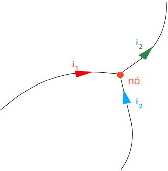
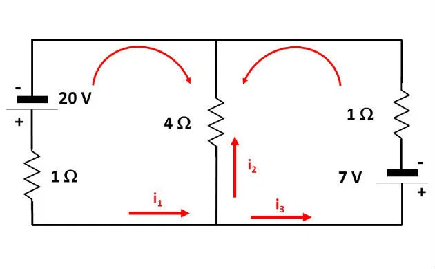

TRABALHO DE PORTAL EDUCAÇÃO
Título: Lei de Kirchhoff
Introdução: As Leis de Kirchhoff são pilares fundamentais da eletroeletrônica e da engenharia elétrica. Desenvolvidas pelo físico alemão Gustav Robert Kirchhoff em 1845, essas regras permitem analisar e resolver circuitos complexos que vão além da lei de Ohm isolada.
TRABALHO DE PORTAL EDUCAÇÃO
Título: Lei de Kirchhoff
Introdução: As Leis de Kirchhoff são pilares fundamentais da eletroeletrônica e da engenharia elétrica. Desenvolvidas pelo físico alemão Gustav Robert Kirchhoff em 1845, essas regras permitem analisar e resolver circuitos complexos que vão além da lei de Ohm isolada.
Conteúdo Técnico:
1ª Lei de Kirchhoff – Lei das Correntes (LKC): Esta regra baseia-se diretamente no princípio físico da conservação da carga elétrica. Ela determina que a soma algébrica das correntes elétricas que entram em um nó deve ser exatamente igual à soma das correntes que dele saem. Matematicamente, a soma total das correntes em um nó é nula, indicando que nenhuma carga elétrica pode ser retida ou criada acumulada nesses pontos de junção.
2ª Lei de Kirchhoff – Lei das Tensões (LKV): Esta regra baseia-se no princípio da conservação da energia em um campo elétrico conservativo. Ela estabelece que a soma algébrica de todas as diferenças de potencial (tensões) ao longo de qualquer malha fechada em um circuito é igual a zero. Isso significa que toda a energia fornecida pelas fontes geradoras de tensão é integralmente consumida pelas quedas de potencial nos resistores e demais receptores daquele mesmo caminho fechado.
Exemplos práticos: Ao ligar simultaneamente um chuveiro elétrico e uma lâmpada no mesmo circuito principal da casa, a corrente total que entra pelo disjuntor geral se divide exatamente de forma proporcional entre os ramos de cada eletrodoméstico, garantindo que a corrente que retorna pelo fio neutro mantenha a conservação do sistema.
Recursos visuais:

